Project 3: Image Warping and Mosaicing
Project 3 involved using homography transformations to warp images to
different perspectives and create blended mosaics/panoramas of multiple
images taken from different perspectives.
Part A: Image Warping and Mosaicing
Part A focused on implementing the algorithms required to warp images into
alignment given a set of correspondences to create mosaics/panoramas.
A.1: Shoot the Pictures
Part A.1 involved taking the pictures to be used for the project.
Multiple pictures were taken of the same scene but from different
perspectives. All images of the same scene were simply rotated around
the center of projection (i.e. the camera lens), and an overlap between
the contents of each (adjacent) image was necessary to allow
identification of correspondences.
A.2: Recover Homographies
Part A.2 involved implementing the algorithm to actually calculate the
homography transformation matrix H from 2 sets of corresponding points
between two images. Correspondences were identified manually using a
tool that allows the user to click on points that correspond to one
another in two images. With a list of at least 4 non-degenerate
correspondences, there is sufficient information to calculate the
homography matrix by solving a system of n linear equations in the
matrix form Ah=y where n is the number of correspondences, A is an n*8
matrix containing correspondence data, h is the 8*1 flattened homography
matrix (with the 9th "scale" degree of freedom fixed at 1), and y is an
n*1 matrix containing correspondence data. Supplying only 4
correspondences means the system is very sensitive to minor changes in
input, so to allow for more than 4 correspondences to be used (i.e. an
overdetermined system), we solve the system of equations using least
squares linear regression.
Below is a pair of images with their correspondences labeled, followed
by the final H homography matrix and the matrix representation of the
system of linear equations solved (with least squares) to obtain it
(from the correspondences).
A.3: Warp the Images
Part A.3 involved implementing the actual warping of the images. This
was done using inverse warping where each pixel coordinate in the output
image was mapped to a pixel coordinate in the input image using the
inverse of H. To interpolate pixel values (i.e. to map to a discrete
pixel coordinate in the input image), two algorithms were implemented:
nearest neighbor and bilinear. Nearest neighbor simply rounds to the
nearest pixel whereas bilinear calculates a local linear approximation
of the the output pixel value from the nearest 4 input pixel values.
Below are 2 images that were taken at an angle and rectified using
inverse warping with both nearest neighbor interpolation and bilinear
interpolation. Both interpolation algorithms are shown for comparison.
A.4: Blend the Images into a Mosaic
Part A.4 involved using parts A.2 and A.3 to warp multiple images into
alignment to create a mosaic/panorama effect. The images were also
blended to hide edge artifacts. A distance transform is used to generate
the masks used to blend the images more smoothly. A single canvas shape
is generated from each image's dimensions and H matrices before the
images are transformed to preserve the translations and scaling in the
final panorama.
Below are 3 examples of images combined with the panorama effect.
Part B: Feature Matching for Autostitching
Part B focused on implementing algorithms to automatically align images by
automatically detecting corresponding features between images. It
implemented the techniques described in "Multi-Image Matching using
Multi-Scale Oriented Patches" by Brown et al.
B.1: Harris Corner Detection
Part B.1 involved implementing the Adaptive Non-Maximal Suppression
(ANMS) algorithm to the Harris Corner Detection algorithm. Harris corner
detection automatically detects potential interest points in an image.
ANMS then extracts a subset of only n points. ANMS is designed to
balance the significance/prominence of the corner measurement for each
selected point with uniformity of distribution over space. In other
words, ANMS tries to select points that are significant without
selecting tight clusters of points.
Below is an example of an input image, the same image with all initial
(before ANMS) Harris corners marked, and the image with only the top 100
Harris corners marked, as selected by ANMS. Note that 100 was a
user-defined parameter provided to ANMS.
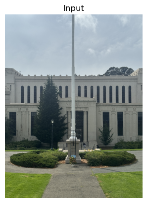
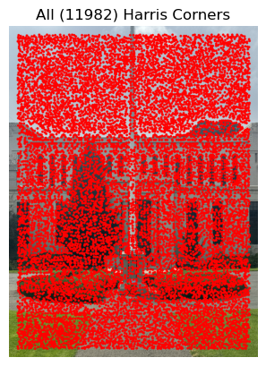
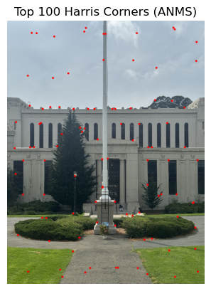
B.2: Feature Descriptor Extraction
Part B.2 involved extracting feature descriptors for a set of interest
points in an image (e.g. those identified in part B.1). The goal is to
have a set of features that describes the local neighborhood around a
point in the image. The process of extracting a feature from a point
involves: blurring the input image (to act as a low-pass filter),
sampling a local neighborhood around the interest point (40x40 in our
implementation), downsampling (40x40 -> 8x8 in our implementation), and
normalizing mean and standard deviation to 0 and 1 (i.e. bias/gain
normalization).
Below are all 100 extracted feature descriptors (at different points in
the extraction process) that correspond to the 100 points identified by
ANMS in part B.1.
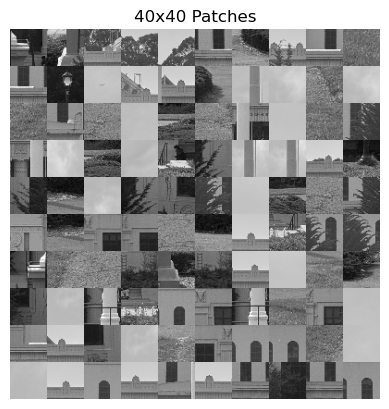
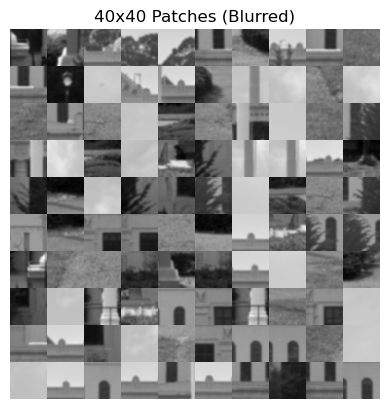
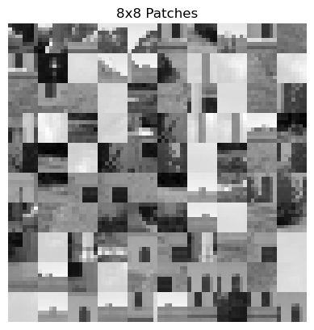
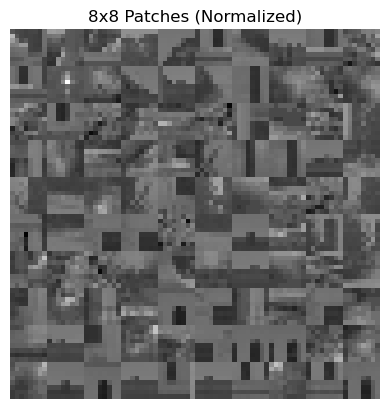
Below is an example of a single extracted feature. Left is the 40x40
patch from the source image, the 40x40 patch from the blurred image, and
the final 8x8 normalized feature descriptor patch.
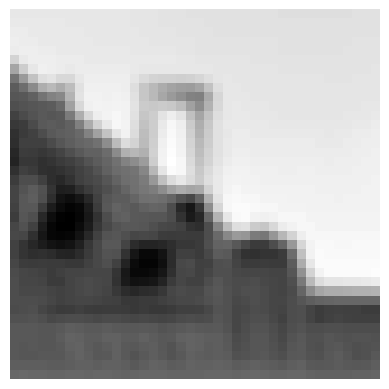
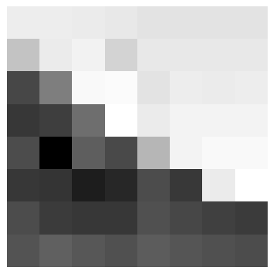
B.3: Feature Matching
Part B.3 involved matching corresponding features between two images.
The goal is to generate a set of correspondences between two images
based on the feature descriptors of interest points in each image. Each
point in the left image is mapped to the first and second nearest
neighbors in the right image in feature space. The 1NN is assumed to be
the correspoinding point, and each mapping is scored by the ratio of
1NN/2NN. The correspondences are then thresholded on the 1NN/2NN ratio
to eliminate likely bad candidates.
Below are three examples of correspondences identified by the feature
matching algorithm. A static threshold of 0.2 is shown on the left, and
the right shows identified correspondences at different thresholds. As
the threshold increases, the proportion of outliers (i.e. "incorrect
correspondences") typically increases.
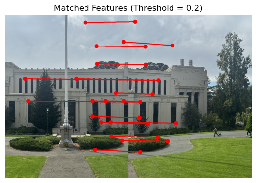
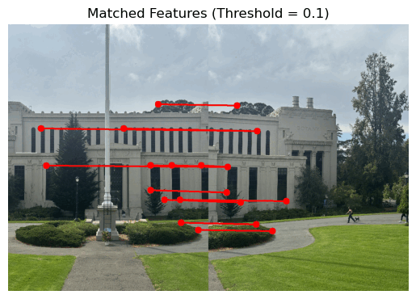
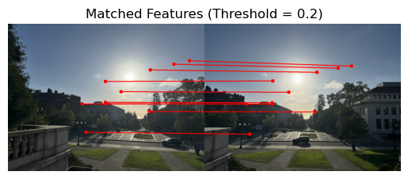
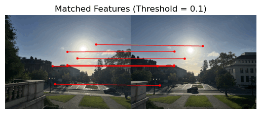
B.4: RANSAC for Robust Homography
Part B.4 involved implementing RANSAC to eliminate outlier
correspondences from feature matching (part B.3). RANSAC identifies the
largest set of inliers over multiple homographies calculated from random
subsamples of correspondences. A final homography is then calculated
from the largest set of inliers as the final mapping between the two
images. This process can then be used to generate mosaics/panoramas in
the same fashion as Part A.
Each of the images on the left below is a panorama generated by manually
identifying correspondences (Part A), and each of the images on the
right is a panorama automatically generated using the techniques from
Part B. Both approaches use the same blending techinuqe described in
Part A.4.
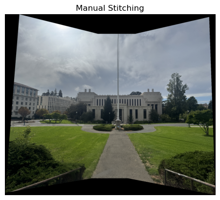
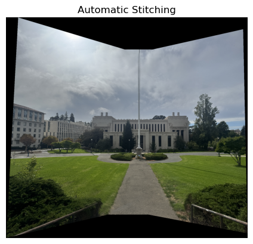
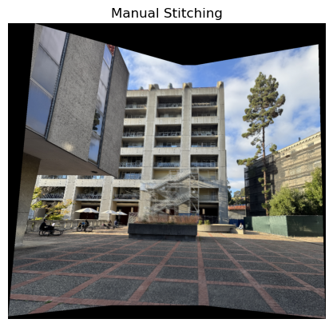
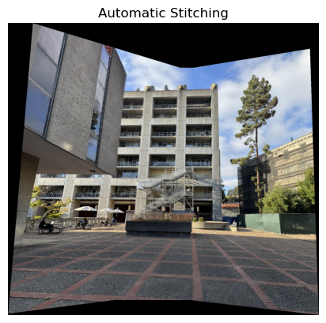
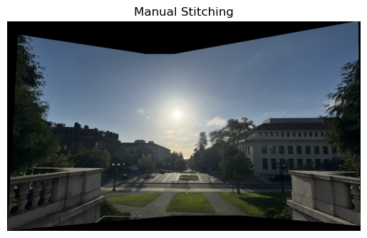
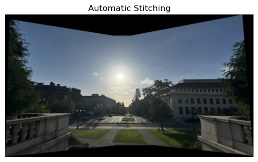